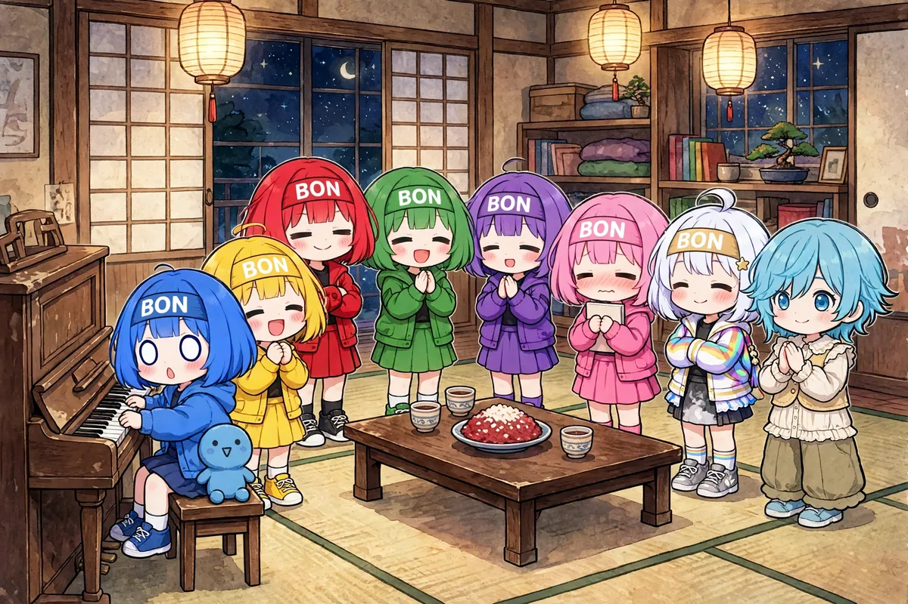

夜、居間のちゃぶ台の上は、いつもより、にぎやかだった。
大きなおひつが、どん、と、まんなかに置いてある。ふたをあけると、ほかほかの湯気と、いっしょに、赤いお赤飯が、ふわっと姿をあらわした。白ごまが、ぱらぱら、散って、いいにおいが、居間じゅうにひろがっていく。
「小豆はね〜、今日も、商店街の、かぶボンさんの、お店で、買ったんだよ〜。ひょえの、お祝いだって、言ったら、また、いちばん、いいのを、えらんでくれたの〜」
もぐさんが、エプロンのすそで、手をふきながら、うれしそうに言った。
「ひょえちゃん。おめでとうございます」
てれさんが、ボンの前にそっと小さな紙を置いた。折りたたんだ紙には、ちいさな字で、「ひょえちゃんへ」と、書かれている。
「あの、ひ、ひらいて、みて、ください」
ボンは、紙をそっとひらいた。
『ひょえちゃんのことばは、朝の光のようにやわらかく、のびていきます。これからも、ずっとそばで、聞いています』
ボンは、紙をぎゅっと胸にだきしめた。
「てれさん、ありがとう。大切にする」
「あ、いえ、その……」
てれさんは、また、ほっぺをまっかにそめた。
「ほらほら、みんな、お祝いの、前に、まず、乾杯でしょ」
おこさんが、湯のみをかかげた。
「ひょえ、のびのびボン期、おめでとう！ ほら、みんなも、持って！」
「おめでとー！」
にこちゃんが、湯のみをぶんぶん、ふった。みのちゃんも、「すごーい、おめでとー！」と、声をあげた。ねむさんは、「……おめでとう……」と、湯のみをうとうと、ゆらしている。にじさんは、「実に、めでたい」と、おごそかにうなずいた。
「いただきます」
「ボーン！」
七人と、みのちゃんの声が、そろった。ボンも、ひときわ、大きな声で、言った。
お赤飯は、もちもちで、あまくて、ごまのいいにおいが、した。ひと口、食べるたびに胸が、じんわり、あたたかくなる。
「ひょえ〜、どう〜？ どう〜？」
もぐさんが、ボンをのぞきこんだ。
「おいしい。もぐさん、お赤飯、もちもちしてて、小豆の、やさしい味が、ちゃんと、する。ごまも、ぱらぱらで、すごく、いいにおい」
「ひょえ〜〜〜」
もぐさんは、また、うるうる、してしまった。
お赤飯が、すっかり、少なくなった、ころ。ボンは、湯のみをちゃぶ台にそっと置いた。
「あの、みんな」
みんなが、ボンを見た。
「ボンから、ひとつ、お願いが、あるんだ」
「なによ、あらたまって」
おこさんが、にやっと笑う。
「あのね。ボン、ピアノを、ひいてみたい。みんなの前で、ひとつだけ、ひとフレーズだけ。……いい？」
一瞬、しいん、と、した。それから、にこちゃんが、ぴょんっとはねた。
「いいよいいよー！ ひょえちゃんの、ピアノ、聞きたーい！」
ボンは、立ちあがって、居間のすみっこの古い、ピアノの前に座った。みんなが、ちゃぶ台のまわりから、こっちを見ている。みのちゃんは、両手をほっぺにあてて、わくわく、している。
ボンは、すう、と、息をすった。
ふたをゆっくりあけて、両手を鍵盤の上にのせる。
ぽろん。
ぽろん。
ぽろろん。
ぽろん。
今朝のあの八つの音をボンは、ゆっくりひとつずつ、弾いた。夜の森をひとりで、歩く、ような。こわいけど、胸に小さな、ほしが、ともっている、ような。
最後の音が、ふわあっと消えたとき、居間は、しいんと、しずまりかえっていた。
ボンは、ゆっくりと、ふりかえった。
みんなが、じっとボンを見つめていた。
「……すごーい」
最初に声を出したのは、みのちゃんだった。
「ひょえ、今の、どこで、おぼえたの？」
「ううん。朝、おうちを、まわっていたら、うかんできた。たった、八つの、音だけ」
「ひょえが、つくったの？」
「……たぶん」
居間が、ざわっとした。
そのとき、てれさんが、ノートをひらいた。ペンを持つ、手が、少し、ふるえている。
「あ、あの……ひょえちゃん。その、メロディに、ことばを、つけても、よろしいでしょうか」
「ことば？」
「は、はい。今、頭の中に、うかんだんです」
てれさんは、ノートにさらさらと、書きつけて、そっと読みあげた。
「ちいさな、よるの、もりの、なか。ひとつ、ともった、ほしの、いろ」
ボンの胸が、どくん、と、鳴った。
その二行は、さっきの八つの音にぴたっとはまった。まるで、はじめから、ひとつのうたのように。
「……てれさん」
「は、はい」
「ボン、その、ことば、すき」
「あ、ありがとう、ございます……」
てれさんは、ノートで、顔をかくした。
「ふむ」
にじさんが、こほん、と、せきをした。
「ひょえボン。そのフレーズには、題が、必要であろう。我輩が、つけてもよいか」
「にじさんが？」
「うむ。夜の森を、歩く、小さな、冒険心。そのはかなさと、色どりを、あわせて……『儚彩小夜』、というのは、どうだ」
「ぼうさい、さよ……」
ボンは、そのことばをくちびるで、そっとなぞった。はかなくて、色とりどりで、小さな、夜。ボンの八つの音にこれ以上、ぴったりな、名前は、なかった。
「うん。それがいい。にじさん、ありがとう」
「どういたしまして、である」
にじさんは、満足げにふっと笑った。
「わたし、うたう！」
にこちゃんが、勢いよく、立ちあがった。
「ひょえちゃんの、曲、わたしが、うたうよ！ てれちゃんの、ことばで！」
「にこちゃん……」
「ひょえちゃん、もう一回、ひいて！ わたし、うたうから！」
ボンは、こくん、と、うなずいて、もう一度、鍵盤に手をのせた。
ぽろん。ぽろん。ぽろろん。ぽろん。
にこちゃんの声が、ふわっと重なった。
「ちいさな、よるの、もりの、なか……」
にこちゃんの歌は、ボンのピアノの上をひらひらと、舞った。やわらかくて、あたたかくて、ほんのり、切ない。てれさんのことばと、にじさんの名前と、ボンの音が、ひとつにつながった。
「ひとつ、ともった、ほしの、いろ」
歌が、おわったとき、居間じゅうが、ぱちぱち、と、拍手につつまれた。

ひょえボンの はじめての ピアノと うた。「す、すごいです……」
「ほんとうに、曲に、なってる……」
「……きれい……」
ボンは、ぽかんと、して、みんなの顔を見まわした。
ただ、ふと、頭にうかんだ、八つの音を弾いただけのつもり、だった。それが、てれさんのことばと、にじさんの題と、にこちゃんの歌で、あっという間にひとつの曲になってしまった。
ボンは、自分の顔が、じわじわと、熱く、なるのを感じた。
「ひょ、ひょえっ」
思わず、口から、いつもの声が、こぼれた。みんなが、どっと笑った。
「ひょえ、今の、いつもの、だ！」
「やっぱり、そこは、変わらないのね」
おこさんが、にやにや、笑いながら、ボンのほっぺをぷにっとつまんだ。みのちゃんが、「すごーい、ひょえ、すごーい！」と、ぴょんぴょん、はねる。
ボンは、ぷにを取り出して、ぎゅっとだいた。
うれしくて、はずかしくて、胸が、いっぱいで、もう、なにも、言えなかった。
♪ 儚彩小夜(ぼうさいさよ)
ひょえボンが はじめて つくった うた。のちに かたちに なった ぜんぶの きょくは、こちら。
ひょえボンが つくった フレーズは、2:29 から。